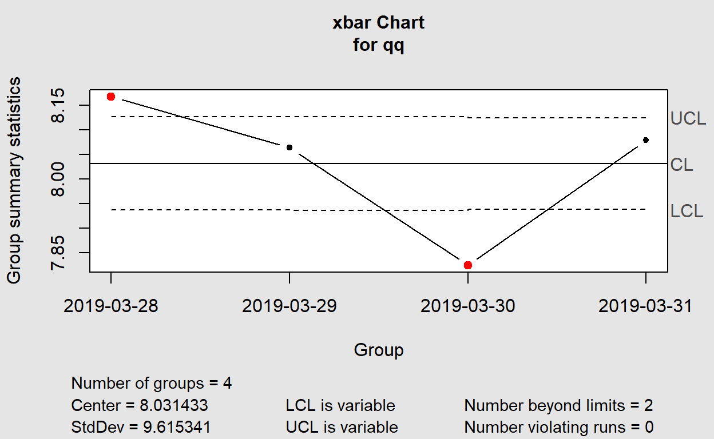

1.0 Overview
1.1 Objective
The study objective is to seek insight from Prime Mover (PM) Operations from port operations to identify common characteristics exhibited by PM with high and low waiting times, through understanding of PM events and operational data. This, in turn, enables us to pinpoint and identify correlated attributes and embark on further study to improve the overall productivity of PM operations and resource utilisation through active targeting of activities contributing to the PM waiting time.
1.2 Literature review
Current studies of PM productivity focus much on waiting time majoring of the operation time were spent. effort in improving resource planning yard storage and berth planning.
Current operation performances are tracked using Operation Indicators such as PM productivity and PM waiting time aggregated by duration, from shifts to monthly reports and breakdown by individual terminal and PM.
Previous studies on PM operation efficiency typically focus on crane productivity by work schedule , and resource planning & deployment to find the optimal number of PMs and trucks (haulier) to reduce average PM waiting time.
1.3 Components of Data Visualisation
Pareto diagrams and control charts are used together to help tunnel down into the process to find the root cause of problems The delivery data are examined using a control chart to determine if the problem is special causes of variation or just common causes of variation. The Pareto diagram is then used to determine the major reason for delivery problems.
The types of data visualizations used, and corresponding rationales are listed below: 1. Pareto Chart
2. Control chart1.4 Sketch of Proposed Visualisation
1.5 Interactivity
The following interactive features are proposed to be incorporated in the data visualisations to enhance usability and hence user experience: View manipulation: To allow users to manipulate the data by filtering conflict types and year, for a high-level or isolated view, to better examine distribution and patterns across time and space. This feature will be incorporated in the time-series analysis using point symbol maps.
Use of tooltips: Supplementing information about the point event on the point symbol maps when user hovers or clicks on the datapoint. This feature is also incorporated in the stacked area chart (dygraph) whereby frequency values are displayed on the graph upon series/point highlighting. zoom and filter : where users can zoom in on a shorter range of dates Once we spot interesting patterns in the overview, the next logical step is to focus on one in particular and examine it more closely. This method of adjusting the range of time is not only simple to use, but it also provides the added benefit of keeping us constantly reminded of where the four-week period that we’re currently focusing on fits into the larger 52-week whole
When we explore and try to make sense of data, the Dat visualization help us to follow the flow of “overview first, zoom and filter, then details-on-demand,” bouncing back and forth, here and there, with ease and without interrupting our train of thought.
2.0 Step-by-step Data Visualisation Preparation
2.1 Installing and deploying R packages
tidyverse contains a set of essential packages for data manipulation and exploration. lubridate ggplot2 plotly qicharts2 ggQC qcc plyr dplyr dbplyr
packages = c('tidyverse','ggplot2','plotly','lubridate','qicharts2','ggQC','qcc','dplyr' )
for(p in packages){
if(!require(p, character.only = T)){
install.packages(p)
}
library(p, character.only = T)
}
2.2 Data Preparation
2.2.1 Data Source
The data source used in this exercise is from PSA Singapore’s PM anonymised dataset that contains PM operation event records. There are approximately 5 millions records with 69 variables. The dataset is reduced to the following 37 variables for the analysis:
2.2.2 Loading Dataset into R
The Data set is imported using read_csv function which is useful for reading delimited files into data frame.
ZL_Dataset <- read_csv("data/pm 201903.txt")
## Parsed with column specification:
## cols(
## .default = col_character(),
## SHIFT_D = col_double(),
## PM_DISTANCE_Q = col_double(),
## PM_TRAVEL_TIME_Q = col_double(),
## PM_WAIT_TIME_Q = col_double(),
## PM_UNPRODUCTIVE_TIME_Q = col_double(),
## PM_NON_WORK_TIME_Q = col_double(),
## PM_TIME_DIFF_Q = col_double(),
## BATCH_ID = col_double()
## )## See spec(...) for full column specifications.2.2.3 Exclude unneccessary columns
As the studies focus on PM productivity in yard, we filtered to take in only event_c that are Equipment Mount(EQMT) and Equipment Offload(EQOF) operations. Unused columns are also removed using subset() function. This reduced the dataset by half to approximately 470MB which is important when dealing with large dataset.
2.2.4 Convert date columns to date format
It was observed that the variable SHIFT_D and EVENT_DT are in number and char format respectively, as such we convert them using lubridate’s function ymd() ymd_hms() and parse them into date-times.
ZL_DF$SHIFT_D = ymd(as.character(ZL_DF$SHIFT_D))
ZL_DF$EVENT_DT = ymd_hms(as.character(ZL_DF$EVENT_DT))
3.1 Data Visualisation for Pareto Charts
ggplot stat_pareto()
using ggplot #### 3.1.1 summarize data
We summarize the dataset by the total and average of Wait, Travel, Unproductive and Non-work time, group by the following attributes which will be used as filters for R shiny app. The three millions records now reduced to twelves thousand records which will improve the response time of the pareto charts. A final aggregation for the Pareto chart is done by actual and average time.
agg_base <- ZL_DF %>%
group_by(SHIFT_D,EVENT_SHIFT_I,Terminal,MOVE_OP_C,CNTR_TYPE_C,EQUIPMENT_TYPE_C) %>%
dplyr::summarise(N=n(),
Avg_WAIT_TIME = mean(PM_WAIT_TIME_Q),
Total_WAIT_TIME = sum(PM_WAIT_TIME_Q),
Avg_TRAVEL_TIME = mean(PM_TRAVEL_TIME_Q),
Total_TRAVEL_TIME = sum(PM_TRAVEL_TIME_Q),
Avg_UNPRODUCTIVE_TIME = mean(PM_UNPRODUCTIVE_TIME_Q),
Total_UNPRODUCTIVE_TIME = sum(PM_UNPRODUCTIVE_TIME_Q),
Avg_NON_WORK_TIME = mean(PM_NON_WORK_TIME_Q),
Total_NON_WORK_TIME = sum(PM_NON_WORK_TIME_Q))%>%
ungroup()
agg1 <- agg_base %>%
dplyr::summarise(Counts = sum(N),
Total_WAIT_TIME = sum(Total_WAIT_TIME),
Total_TRAVEL_TIME = sum(Total_TRAVEL_TIME),
Total_UNPRODUCTIVE_TIME = sum(Total_UNPRODUCTIVE_TIME),
Total_NON_WORK_TIME = sum(Total_NON_WORK_TIME),
Avg_WAIT_TIME = sum(Total_WAIT_TIME)/sum(N),
Avg_TRAVEL_TIME = sum(Total_TRAVEL_TIME)/sum(N),
Avg_UNPRODUCTIVE_TIME = sum(Total_UNPRODUCTIVE_TIME)/sum(N),
Avg_NON_WORK_TIME = sum(Total_NON_WORK_TIME)/sum(N),
Total_Duration = sum(Total_TRAVEL_TIME+Total_WAIT_TIME+Total_UNPRODUCTIVE_TIME+Total_NON_WORK_TIME)
)
3.1.2 Dataframe and wrap into ggplot.
dataframe convert minutes to day unit as the total value is too huge. plot using ggplot and wrap into plotly for interactively with ggplotly()
(Note: The code for “Average PM operation duration” is similar by using “Avg_” columns and update the labels for title, y & x axis)
Data4Pareto <- data.frame(Time_Indicator = c("Travel Time","Wait Time", "Unproductive Time","Non-Work Time"),
Time = c(agg1$Total_TRAVEL_TIME,agg1$Total_WAIT_TIME,
agg1$Total_UNPRODUCTIVE_TIME,
agg1$Total_NON_WORK_TIME),
stringsAsFactors = FALSE)
#convert minutes to man-days
Data4Pareto$Mandays = time_length(dminutes(Data4Pareto$Time), unit = "day")
Data4Pareto <- Data4Pareto[order(Data4Pareto$Mandays,decreasing=TRUE),]
Data4Pareto$Time_Indicator <- factor(Data4Pareto$Time_Indicator, levels=Data4Pareto$Time_Indicator)
p3 <- ggplot(Data4Pareto, aes(x=Time_Indicator, y=Mandays)) +
stat_pareto(point.size = 3,
line.color = "black" ) +
theme_minimal() +
labs(title = "Total PM Operation Duration - Pareto Chart", y = "Mandays" , x = "Time spent category" )
ggp3 <- ggplotly(p3)
p3
ggp3
### average
AvgData4Pareto <- data.frame(Time_Indicator = c("Travel Time","Wait Time", "Unproductive Time","Non-Work Time"),
Time = c(agg1$Avg_TRAVEL_TIME,
agg1$Avg_WAIT_TIME,
agg1$Avg_UNPRODUCTIVE_TIME,
agg1$Avg_NON_WORK_TIME))
AvgData4Pareto <- AvgData4Pareto[order(AvgData4Pareto$Time,decreasing=TRUE), ]
AvgData4Pareto$Time_Indicator <- factor(AvgData4Pareto$Time_Indicator,levels=AvgData4Pareto$Time_Indicator)
p4 <- ggplot(AvgData4Pareto, aes(x=Time_Indicator , y=Time)) +
ggQC::stat_pareto(point.size = 3,
line.color = "black") +
theme_minimal() +
labs(title = "Average PM Operation Duration - Pareto Chart", y = "Time (mins)" , x = "Time spent category" )
ggp4 <- ggplotly(p4)
p4
ggp4
3.1.3 Paretochart by Qichart2
quick and simple way to plot using paretochart()
applicable to non aggregated dataset. Also able to wrap into ggplotly.
# Variable to set Long waiting time definition
longwait <- c(60)
ZL_DF_longwait <- subset(ZL_DF,ZL_DF$PM_WAIT_TIME_Q >= longwait)
paretochart2 <- paretochart(ZL_DF_longwait$Terminal,xlab = "Terminal",
title = paste("PM waiting time >=",longwait ,"mins (Pareto Chart)"),
aes(text = paste("Date:", x ,"\n","Avg PM Wait Time:", round(y, 2)) ))
ggparetoTerminal <- ggplotly( paretochart2)
ggparetoTerminal
#
#
# ggparetoMOVE_OP_C <- ggplotly(paretochart(ZL_DF_longwait$MOVE_OP_C,xlab = "Operation Type"))
# ggparetoMOVE_OP_C
#
# ggparetoLENGTH_Q <- ggplotly(paretochart(ZL_DF_longwait$LENGTH_Q,xlab = "Container Length"))
# ggparetoLENGTH_Q
#
# ggparetoCNTR_TYPE_C <- ggplotly(paretochart(ZL_DF_longwait$CNTR_TYPE_C,xlab = "Container Type"))
# ggparetoCNTR_TYPE_C
#
## ggparetoEQUIPMENT_TYPE_C <- ggplotly(paretochart(ZL_DF_longwait$EQUIPMENT_TYPE_C,xlab = "Equipment Type"))
# ggparetoEQUIPMENT_TYPE_C
# # Print data frame
3.2 Data Visualisation for Control Chart
Choice of Packages to render control chart
Three options
ggQC - stat_QC however its QC overlay doesnt work well with plotly.Qicharts2
qq <- qcc.groups(data = ZL_DF$PM_WAIT_TIME_Q, ZL_DF$SHIFT_D)
q1 = qcc(qq, type = "xbar", nsigmas = 3)

ZL_DF
## # A tibble: 374,996 x 20
## SHIFT_D Terminal_ID EVENT_C EVENT_DT
## <date> <chr> <chr> <dttm>
## 1 2019-03-30 V2_0 EQOF 2019-03-30 14:13:26
## 2 2019-03-30 V2_0 EQOF 2019-03-30 14:46:08
## 3 2019-03-30 V2_0 EQOF 2019-03-30 16:41:04
## 4 2019-03-29 V2_0 EQMT 2019-03-30 01:42:21
## 5 2019-03-29 V2_0 EQOF 2019-03-30 02:13:12
## 6 2019-03-30 V2_0 EQOF 2019-03-30 20:01:38
## 7 2019-03-30 V2_0 EQOF 2019-03-30 20:24:56
## 8 2019-03-30 V2_0 EQOF 2019-03-30 20:40:49
## 9 2019-03-30 V2_0 EQMT 2019-03-30 20:44:44
## 10 2019-03-30 V2_0 EQMT 2019-03-30 20:47:02
## # ... with 374,986 more rows, and 16 more variables:
## # EVENT_SHIFT_I <chr>, MOVE_OP_C <chr>, LENGTH_Q <chr>,
## # CNTR_TYPE_C <chr>, CNTR_ST_C <chr>, DG_I <chr>,
## # REEFER_I <chr>, UC_I <chr>, OVER_SIZE_I <chr>,
## # EQUIPMENT_TYPE_C <chr>, Terminal <chr>,
## # PM_DISTANCE_Q <dbl>, PM_TRAVEL_TIME_Q <dbl>,
## # PM_WAIT_TIME_Q <dbl>, PM_UNPRODUCTIVE_TIME_Q <dbl>,
## # PM_NON_WORK_TIME_Q <dbl>XbarR <- ggplot(ZL_DF, aes(x = SHIFT_D, y = PM_WAIT_TIME_Q)) +
stat_summary(fun = mean, geom = "point") +
stat_summary(fun = mean, geom = "line")+
stat_QC(method = "XmR", auto.label = T,
label.digits = 2,
show.1n2.sigma = T)
XbarR

p1 <- qic(PM_WAIT_TIME_Q,x = SHIFT_D ,data = ZL_DF,chart = 'xbar', ylab = 'Avg WAIT_TIME(Mins)', xlab = 'Date')
p1

unfortunately ggQC is fully compatible with Plotly. the reference line and annotation will be dropped
https://www.qimacros.com/free-excel-tips/control-chart-limits/ Is it continuous or discrete? What is the sample size? Is the sample size constant? Each type of data has its own distinct formula for sigma and, therefore, its own type of control chart.
final solution PICharts to convert to ggplot then wrap to plotly to achieve control chart.
3.2.1 Xbar chart and S chart with Qicharts2
#p1 <- qic(PM_WAIT_TIME_Q,x = SHIFT_D ,data = ZL_DF,chart = 'xbar', ylab = 'Avg WAIT_TIME(Mins)', xlab = 'Date')
p2 <- qic(PM_WAIT_TIME_Q,x = SHIFT_D ,data = ZL_DF,chart = 's', ylab = 'Avg WAIT_TIME(Mins), 2019', xlab = 'Date')
# storing PIcharts into data.frame
df1 <- p1$data
df2 <- p2$data
load into ggplot
ggp1 <- ggplot(df1, aes(x = ymd(x) , y = y , group = 1, text = paste("Date:", x ,"\n","Avg PM Wait Time:", round(y, 2)))) +
theme_minimal() +
geom_line(color = "steelblue", size = 1) +
geom_point(color = "steelblue", size = 2 ) +
geom_point(data = subset(df1, y >= ucl), color = "red", size = 2) +
geom_point(data = subset(df1, y <= lcl), color = "red", size = 2) +
geom_hline(aes(yintercept = cl),linetype= "dashed") +
geom_hline(aes(yintercept = aUCL),colour ="red",size = 0.5,linetype= "dashed",summary(p1)) +
geom_hline(aes(yintercept = aLCL),colour ="red",size = 0.5,linetype= "dashed",summary(p1)) +
scale_y_continuous(breaks = round(seq(min(df1$y), max(df1$y), by = 0.1),1))+
#rename tooltip attribute text.
labs(title = "Xbar Chart PM Wait Time, 2019" ,
y = "Avg WAIT_TIME(Mins)", x = "Date")
#ggp1
ggp2 <- ggplot(df2, aes(x = ymd(x) , y = y , group = 1,text = paste("Date:", x ,"\n","Avg PM Wait Time:", round(y, 2)))) +
theme_minimal() +
geom_line(color = "steelblue", size = 1) +
geom_point(color = "steelblue", size = 2 ) +
geom_point(data = subset(df2, y >= ucl), color = "red", size = 2) +
geom_point(data = subset(df2, y <= lcl), color = "red", size = 2) +
geom_hline(aes(yintercept = cl),linetype= "dashed") +
geom_hline(aes(yintercept = aUCL),colour ="red",size = 0.5,linetype= "dashed",summary(p2)) +
geom_hline(aes(yintercept = aLCL),colour ="red",size = 0.5,linetype= "dashed",summary(p2)) +
scale_y_continuous(breaks = round(seq(min(df2$y), max(df2$y), by = 0.1),1))+
#rename tooltip attribute text.
labs(title = "S Chart PM Wait Time, 2019" ,
y = "WAIT_TIME (Mins)", x = "Date")
convert into plotly and add annotations
fig1 <- ggplotly(ggp1, tooltip=c("text"))
fig1<- fig1 %>% add_annotations(
x=17987,
y=mean(df1$lcl)+0.02,
xref = "x",
yref = "y",
text = paste("LCL=",round(mean(df1$lcl), 2)),
showarrow = F,
font = list(color = 'red',size = 10),opacity = 0.5
)%>% add_annotations(
x=17987,
y=mean(df1$ucl+0.02),
xref = "x",
yref = "y",
text = paste("UCL=",round(mean(df1$ucl), 2)),
showarrow = F,
font = list(color = 'red',size = 10),opacity = 0.5
)%>% add_annotations(
x=17987,
y=mean(df1$cl)+0.02,
xref = "x",
yref = "y",
text = paste("CL=",round(mean(df1$cl), 2)),
showarrow = F,
font = list(color = 'black',size = 10),
opacity = 0.5
)
fig1
fig2 <- ggplotly(ggp2, tooltip=c("text"))
fig2<- fig2 %>% add_annotations(
x=17987,
y=mean(df2$lcl)+0.02,
xref = "x",
yref = "y",
text = paste("LCL=",round(mean(df2$lcl), 2)),
showarrow = F,
font = list(color = 'red',size = 10),opacity = 0.5
)%>% add_annotations(
x=17987,
y=mean(df2$ucl+0.02),
xref = "x",
yref = "y",
text = paste("UCL=",round(mean(df2$ucl), 2)),
showarrow = F,
font = list(color = 'red',size = 10),opacity = 0.5
)%>% add_annotations(
x=17987,
y=mean(df2$cl)+0.02,
xref = "x",
yref = "y",
text = paste("CL=",round(mean(df2$cl), 2)),
showarrow = F,
font = list(color = 'black',size = 10),
opacity = 0.5
)
fig2
facets
p3 <-qic(PM_WAIT_TIME_Q,x = SHIFT_D ,data = ZL_DF,chart = 'xbar', ylab = 'Avg PM_WAIT_TIME', xlab = 'Date',facets = EQUIPMENT_TYPE_C ~ EVENT_SHIFT_I)
p4 <-qic(PM_WAIT_TIME_Q,x = SHIFT_D ,data = ZL_DF,chart = 's', ylab = 'Avg PM_WAIT_TIME', xlab = 'Date',facets = EQUIPMENT_TYPE_C ~ EVENT_SHIFT_I)
df3 <- p3$data
ggp3 <- ggplot(df3, aes(x = x , y = y , group = 1, text = paste("Date:", x ,"\n","Avg PM Wait Time:", round(y, 2)))) +
theme_minimal() +
geom_line(color = "steelblue", size = 0.5) +
geom_point(color = "steelblue", size = 1 ) +
geom_point(data = subset(df3, y >= ucl), color = "red", size = 1) +
geom_point(data = subset(df3, y <= lcl), color = "red", size = 1) +
geom_hline(aes(yintercept = CL),linetype= "dashed",summary(p3)) +
geom_hline(aes(yintercept = aUCL),colour ="red",size = 0.3,linetype= "dashed",summary(p3)) +
geom_hline(aes(yintercept = aLCL),colour ="red",size = 0.3,linetype= "dashed",summary(p3)) +
#scale_y_continuous(df3,breaks = round(seq(min(df3$y), max(df3$y), by = 0.1),1))+
facet_grid(facet1~facet2)+
#rename tooltip attribute text.
labs(title = "Xbar Chart PM Wait Time, 2019" ,
y = "WAIT_TIME(Mins)", x = "Date")
fig3 <- ggplotly(ggp3, tooltip=c("text"))
fig3
df4 <- p4$data
ggp4 <- ggplot(df4, aes(x = x , y = y , group = 1, text = paste("Date:", x ,"\n","Avg PM Wait Time:", round(y, 2)))) +
theme_minimal() +
geom_line(color = "steelblue", size = 0.5) +
geom_point(color = "steelblue", size = 1 ) +
geom_point(data = subset(df4, y >= ucl), color = "red", size = 1) +
geom_point(data = subset(df4, y <= lcl), color = "red", size = 1) +
geom_hline(aes(yintercept = CL),linetype= "dashed",summary(p4)) +
geom_hline(aes(yintercept = aUCL),colour ="red",size = 0.3,linetype= "dashed",summary(p4)) +
geom_hline(aes(yintercept = aLCL),colour ="red",size = 0.3,linetype= "dashed",summary(p4)) +
facet_grid(facet1~facet2)+
#rename tooltip attribute text.
labs(title = "S Chart PM Wait Time, 2019" ,
y = "WAIT_TIME(Mins)", x = "Date")
fig4 <- ggplotly(ggp4, tooltip=c("text"))
fig4
I(individual) and MR(moving range) chart
last_N = 100
ZL_DF_tail <- tail(ZL_DF, last_N)
#
P_I <- qic(PM_WAIT_TIME_Q, data = ZL_DF_tail, chart = 'i', ylab = 'PM_WAIT_TIME', xlab = 'Operations no.' )
P_MR <- qic(PM_WAIT_TIME_Q, data = ZL_DF_tail, chart = 'mr', ylab = 'PM_WAIT_TIME', xlab = 'Operations no.' )
DF_I = P_I$data
ggp_I <- ggplot(DF_I, aes(x = x , y = y, text1 = y , text2 = x) ) +
theme_minimal() +
geom_line(color = "steelblue", size = 1) +
geom_point(color = "steelblue", size = 2 ) +
geom_point(data = subset(DF_I, y >= ucl), color = "red", size = 2) +
geom_point(data = subset(DF_I, y <= lcl), color = "red", size = 2) +
geom_hline(aes(yintercept = cl),linetype= "dashed") +
geom_hline(aes(yintercept = aUCL),colour ="red",size = 0.5,linetype= "dashed",summary(P_I)) +
#scale_y_continuous(breaks = round(seq(min(DF_I$y), max(DF_I$y), by = 10),1))+
#rename tooltip attribute text.
labs(title = "PM Wait Time - I Chart" ,
y = "WAIT_TIME(Mins)", x = "Operations no.")+
#if (DF_I$lcl >0) {
geom_hline(aes(yintercept = aLCL),colour ="red",size = 0.5,linetype= "dashed",summary(P_I))
# }
fig_I <- ggplotly(ggp_I, tooltip=c("text2","text1"))
fig_I<- fig_I %>% add_annotations(
x=last_N,
y=mean(DF_I$lcl)+2,
xref = "x",
yref = "y",
text = paste("LCL=",round(mean(DF_I$lcl), 2)),
showarrow = F,
font = list(color = 'red',size = 10),opacity = 0.5
)%>% add_annotations(
x=last_N,
y=mean(DF_I$ucl+2),
xref = "x",
yref = "y",
text = paste("UCL=",round(mean(DF_I$ucl), 2)),
showarrow = F,
font = list(color = 'red',size = 10),opacity = 0.5
)%>% add_annotations(
x=last_N,
y=mean(DF_I$cl)+2,
xref = "x",
yref = "y",
text = paste("CL=",round(mean(DF_I$cl), 2)),
showarrow = F,
font = list(color = 'black',size = 10),
opacity = 0.5
)
fig_I
DF_MR = P_MR$data
ggp_MR <- ggplot(DF_MR, aes(x = x , y = y, text1 = y , text2 = x) ) +
theme_minimal() +
geom_line(color = "steelblue", size = 1) +
geom_point(color = "steelblue", size = 2 ) +
geom_point(data = subset(DF_MR, y >= ucl), color = "red", size = 2) +
geom_point(data = subset(DF_MR, y <= lcl), color = "red", size = 2) +
geom_hline(aes(yintercept = cl),linetype= "dashed") +
geom_hline(aes(yintercept = aUCL),colour ="red",size = 0.5,linetype= "dashed",summary(P_MR))+
# scale_y_continuous(breaks = round(seq(min(DF_MR$y), max(DF_MR$y), by = 10),1))+
#rename tooltip attribute text.
labs(title = "PM Wait Time - MR Chart" ,
y = "WAIT_TIME(Mins)", x = "Operations no.")+
#if (DF_MR$lcl >=0) {
geom_hline(aes(yintercept = aLCL),colour ="red",size = 0.5,linetype="dashed",summary(P_MR))
# }
fig_MR <- ggplotly(ggp_MR, tooltip=c("text2","text1"))
fig_MR<- fig_MR %>% add_annotations(
x=last_N,
y=mean(DF_MR$lcl)+2,
xref = "x",
yref = "y",
text = paste("LCL=",round(mean(DF_MR$lcl), 2)),
showarrow = F,
font = list(color = 'red',size = 10),opacity = 0.5
)%>% add_annotations(
x=last_N,
y=mean(DF_MR$ucl+2),
xref = "x",
yref = "y",
text = paste("UCL=",round(mean(DF_MR$ucl), 2)),
showarrow = F,
font = list(color = 'red',size = 10),opacity = 0.5
)%>% add_annotations(
x=last_N,
y=mean(DF_MR$cl)+2,
xref = "x",
yref = "y",
text = paste("CL=",round(mean(DF_MR$cl), 2)),
showarrow = F,
font = list(color = 'black',size = 10),
opacity = 0.5
)
fig_MR
C(Count) U(Rate) P(Proportion)
agg_Count <- ZL_DF_longwait %>%
group_by(SHIFT_D) %>%
dplyr::summarise(longwait_No =n()
)%>%
ungroup()
agg_total <- agg_base %>%
group_by(SHIFT_D) %>%
dplyr::summarise(Total_No =sum(N)
)%>%
ungroup()
agg_merge <- merge( agg_Count, agg_total, by="SHIFT_D")
P_C <- qic(longwait_No,x=SHIFT_D, data = agg_Count, chart = 'c', ylab = 'Count', xlab = 'Date' )
P_P <- qic(longwait_No,n=Total_No,x=SHIFT_D, data = agg_merge, chart = 'p', ylab = 'Percent', xlab = 'Date' )
P_U <- qic(longwait_No,n=Total_No,x=SHIFT_D, data = agg_merge, chart = 'u', multiply = 1000, ylab = 'Count Per 1000 Moves', xlab = 'Date' )
DF_C = P_C$data
ggp_C <- ggplot(DF_C, aes(x = ymd(x) , y = y, text1 = y , text2 = x) ) +
theme_minimal() +
geom_line(color = "steelblue", size = 1) +
geom_point(color = "steelblue", size = 2 ) +
geom_point(data = subset(DF_C, y >= ucl), color = "red", size = 2) +
geom_point(data = subset(DF_C, y <= lcl), color = "red", size = 2) +
geom_hline(aes(yintercept = cl),linetype= "dashed") +
geom_hline(aes(yintercept = aUCL),colour ="red",size = 0.5,linetype= "dashed",summary(P_C)) +
#scale_y_continuous(breaks = round(seq(min(DF_C$y), max(DF_C$y), by = 10),1))+
#rename tooltip attribute text.
labs(title = "Long Wait Time - C Chart" ,
y = "Count", x = "Date")+
#if (DF_I$lcl >0) {
geom_hline(aes(yintercept = aLCL),colour ="red",size = 0.5,linetype= "dashed",summary(P_C))
# }
fig_C <- ggplotly(ggp_C, tooltip=c("text2","text1"))
fig_C<- fig_C %>% add_annotations(
x=17987,
y=mean(DF_C$lcl)+2,
xref = "x",
yref = "y",
text = paste("LCL=",round(mean(DF_C$lcl), 2)),
showarrow = F,
font = list(color = 'red',size = 10),opacity = 0.5
)%>% add_annotations(
x=17987,
y=mean(DF_C$ucl+2),
xref = "x",
yref = "y",
text = paste("UCL=",round(mean(DF_C$ucl), 2)),
showarrow = F,
font = list(color = 'red',size = 10),opacity = 0.5
)%>% add_annotations(
x=17987,
y=mean(DF_C$cl)+2,
xref = "x",
yref = "y",
text = paste("CL=",round(mean(DF_C$cl), 2)),
showarrow = F,
font = list(color = 'black',size = 10),
opacity = 0.5
)
fig_C
DF_P = P_P$data
ggp_P <- ggplot(DF_P, aes(x = ymd(x) , y = y, text1 = y , text2 = x) ) +
theme_minimal() +
geom_line(color = "steelblue", size = 1) +
geom_point(color = "steelblue", size = 2 ) +
geom_point(data = subset(DF_P, y >= ucl), color = "red", size = 2) +
geom_point(data = subset(DF_P, y <= lcl), color = "red", size = 2) +
geom_hline(aes(yintercept = cl),linetype= "dashed") +
geom_hline(aes(yintercept = aUCL),colour ="red",size = 0.5,linetype= "dashed",summary(P_P)) +
scale_y_continuous(labels = scales::percent)+
#scale_y_continuous(breaks = round(seq(min(DF_P$y), max(DF_P$y), by = 10),1))+
#rename tooltip attribute text.
labs(title = "Long Wait Time - P Chart" ,
y = "Percent", x = "Date")+
#if (DF_I$lcl >0) {
geom_hline(aes(yintercept = aLCL),colour ="red",size = 0.5,linetype= "dashed",summary(P_P))
# }
fig_P <- ggplotly(ggp_P, tooltip=c("text2","text1"))
fig_P<- fig_P %>% add_annotations(
x=17987,
y=mean(DF_P$lcl+0.0002),
xref = "x",
yref = "y",
text = paste("LCL=",round(mean(DF_P$lcl), 2)),
showarrow = F,
font = list(color = 'red',size = 10),opacity = 0.5
)%>% add_annotations(
x=17987,
y=mean(DF_P$ucl+0.0002),
xref = "x",
yref = "y",
text = paste("UCL=",round(mean(DF_P$ucl), 2)),
showarrow = F,
font = list(color = 'red',size = 10),opacity = 0.5
)%>% add_annotations(
x=17987,
y=mean(DF_P$cl)+0.0002,
xref = "x",
yref = "y",
text = paste("CL=",round(mean(DF_P$cl), 2)),
showarrow = F,
font = list(color = 'black',size = 10),
opacity = 0.5
)
fig_P
DF_U = P_U$data
ggp_U <- ggplot(DF_U, aes(x = ymd(x) , y = y, text1 = y , text2 = x) ) +
theme_minimal() +
geom_line(color = "steelblue", size = 1) +
geom_point(color = "steelblue", size = 2 ) +
geom_point(data = subset(DF_U, y >= ucl), color = "red", size = 2) +
geom_point(data = subset(DF_U, y <= lcl), color = "red", size = 2) +
geom_hline(aes(yintercept = cl),linetype= "dashed") +
geom_hline(aes(yintercept = aUCL),colour ="red",size = 0.5,linetype= "dashed",summary(P_U)) +
#scale_y_continuous(breaks = round(seq(min(DF_U$y), max(DF_U$y), by = 10),1))+
#rename tooltip attribute text.
labs(title = "Long Wait Time - U Chart" ,
y = "Count Per 1000 Moves", x = "Date")+
#if (DF_I$lcl >0) {
geom_hline(aes(yintercept = aLCL),colour ="red",size = 0.5,linetype= "dashed",summary(P_U))
# }
fig_U <- ggplotly(ggp_U, tooltip=c("text2","text1"))
fig_U<- fig_U %>% add_annotations(
x=17987,
y=mean(DF_U$lcl)+0.2,
xref = "x",
yref = "y",
text = paste("LCL=",round(mean(DF_U$lcl), 2)),
showarrow = F,
font = list(color = 'red',size = 10),opacity = 0.5
)%>% add_annotations(
x=17987,
y=mean(DF_U$ucl+0.2),
xref = "x",
yref = "y",
text = paste("UCL=",round(mean(DF_U$ucl), 2)),
showarrow = F,
font = list(color = 'red',size = 10),opacity = 0.5
)%>% add_annotations(
x=17987,
y=mean(DF_U$cl)+0.2,
xref = "x",
yref = "y",
text = paste("CL=",round(mean(DF_U$cl), 2)),
showarrow = F,
font = list(color = 'black',size = 10),
opacity = 0.5
)
fig_U
4.0 Final Data Visualisation
limitation
However, minor to moderate shifts may go unnoticed by the 3-sigma rule for long periods of time. With fewer data points, they lose sensitivity (more false negatives), and with more data points they lose specificity (more false positives).
5.0 Advantages of incorportating interactivity
6.0 limitation and future improvement